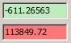

|
监听光标机制
|
软件的某些部分可以监听从其他窗口（例如图谱查看器或图像查看器）发送的光标位置。
存在隐式和显式两种监听模式：
隐式监听 自动发生，例如，如果您点击图像查看器，图谱查看器会监听空间位置并显示图像图谱数据对象的相应光谱。
显式监听 由对话框或编辑框自动激活，或需要由用户激活。显式监听有以下几种可能性：
具有监听功能的编辑框

软件中所有具有 绿色 背景颜色的编辑控件都是"可监听"的。
这意味着它们的值可以通过从其他窗口发送光标位置来更改。
您可以通过 双击编辑控件 来开启或关闭监听模式。
当前正在监听的编辑控件具有 红色 背景颜色。
编辑控件将监听哪个单位或光标取决于值的类型。
通过监听光标机制操作掩模
请参阅 掩模操作工具。